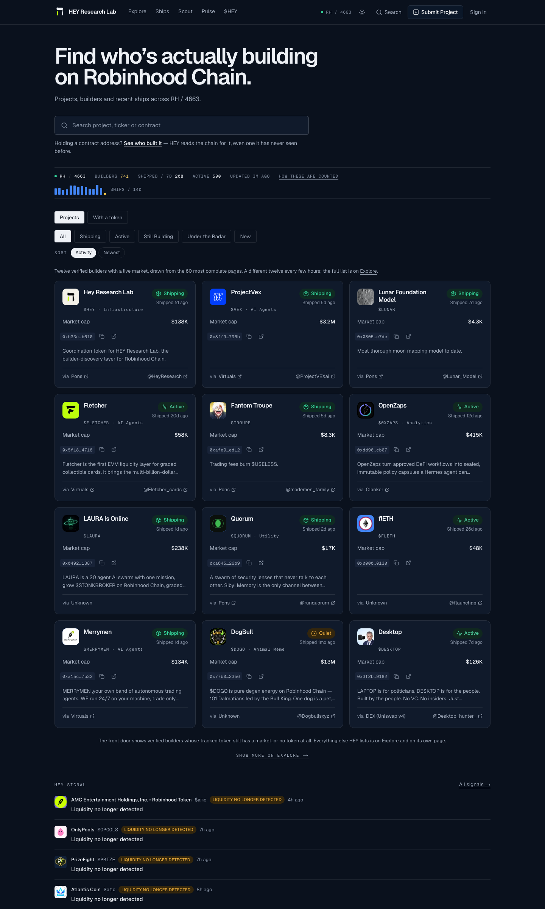
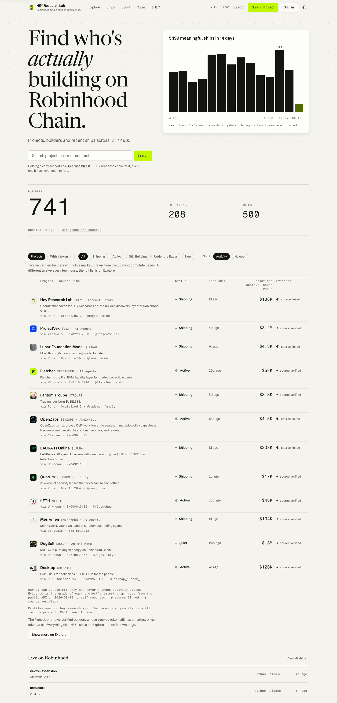
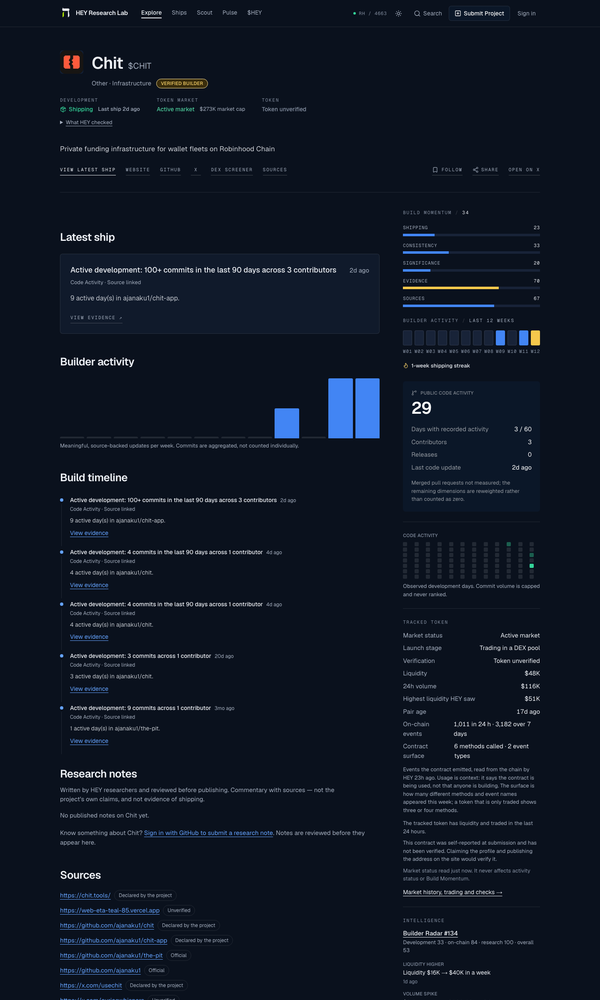
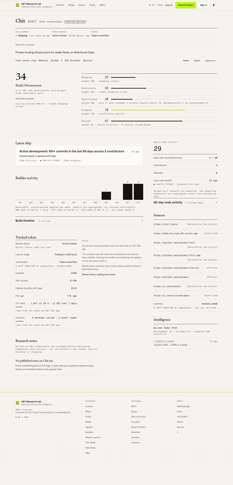
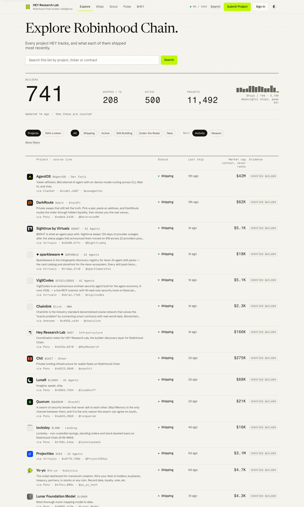
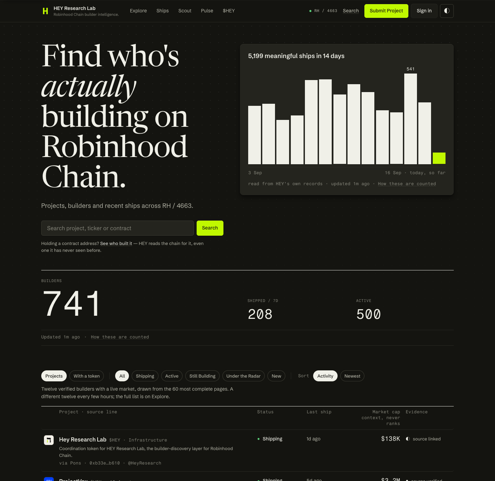
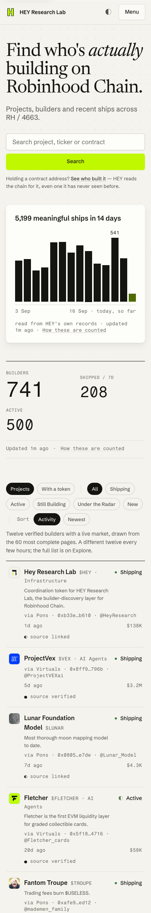

HEY Research Lab, a redesign proposal
This is a proposal for how heyresearch.xyz could look. We built it as a static prototype from the live site's own pages on 16 September 2026. Every number and every sentence in it is HEY's. Nothing was invented, and no copy was rewritten beyond button and caption text. It is unsolicited and free to use, take pieces from, or ignore.
Home
1440 wide · light · 16 September 2026

Project profile: Chit
1440 wide · light · 16 September 2026

Explore
1440 wide · light · prototype only
Dark and phone
prototype only · the live site is dark-only in practice

What changed
- The ledger. Twelve projects as ruled rows instead of twelve equal cards. The eye reads down a column, and density needs no boxes.
- The source line. Every number carries its provenance beneath it in mono. HEY's claim is that it shows the evidence; the page now looks like that is true.
- Momentum first. Build Momentum and its five weighted parts open the profile. It is the product, and it was in a sidebar below the fold.
- Warm dark. Dark mode is a warm ramp, not navy and not an inversion of light.
- HEY's own colours. Cream, ink and lime, sampled from HEY's icon. Lime is a fill for the mark, the primary button and the focus ring.
What we did not change
- Their copy. Headline, one-liners, disclosures and empty states are unchanged.
- Their scoring. Build Momentum, its weights, the 0 to 100 scale and hbm-v5 are shown as published.
- Their statuses. Shipping, Active, Quiet, Dormant, and the evidence grades, keep their words and their meaning.
- Their mark. The H mark and its colours are HEY's; the prototype only redraws it as an inline vector.
Open the prototype
Seven pages, one stylesheet, one token file, one script for Explore, fonts self-hosted. Open site/index.html, or serve the site/ folder with any static server. The token file and class list for a port are described in DESIGN_SYSTEM.md at the repository root.
Where the numbers come from
- The live pages. Home, the Chit profile, Explore, Scan, $HEY, Account and Methodology on heyresearch.xyz, read on the morning of 16 September 2026. Market caps are that morning's values and drifted within hours.
- The public API. The evidence grade of each home project's latest ship comes from HEY's public API, read without a key on the same morning; the API value PUBLICLY_VERIFIED is shown with the methodology's phrase "source verified". Explore reads the projects endpoint live./api/ships?project=slug · /api/projects
- The 14-day chart. "5199 meaningful ships over the last 14 days, peaking at 541 in a day" and its fourteen daily values are the live home page's own chart label, not recomputed.
- Not in the prototype. The home page shows the twelve front-door projects, not the 11,492-project catalogue; momentum is shown for Chit only; 17 nav and footer targets point at pages that were not built.